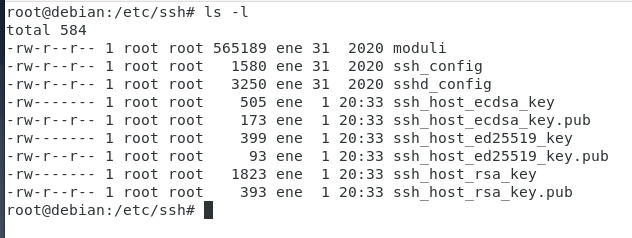

En distribuciones Linux, para poder controlar un equipo remotamente vía SSH, tan solo se necesita instalar el software servidor "openssh-server". Para ello se ejecuta el comando:
apt-get install openssh-server.Una vez instalado, el servicio SSH queda a la espera de solicitudes de conexión en modo seguro por parte de equipos remotos. En muchas ocasiones es necesaria la modificación de la configuración que SSH establece por defecto en su servicio. Para ello, una vez instalado el servicio, dentro del directorio /etc/ssh, se pueden encontrar dos ficheros que no deben ser confundidos puesto que tienen nombres muy parecidos pero con una finalidad totalmente diferente:
{kind=link}
- ssh_config Fichero de configuración que establece el comportamiento de la aplicación cliente SSH.
- sshd_config Fichero de configuración que establece el comportamiento del servicio SSH.
Cabe destacar que no solo son configurables los parámetros que aparecen en el fichero sshd_config. Existen otros parámetros que no están en dicho fichero y que toman unos valores concretos. Para ver la lista de todos los parámetros modificables, incluidos los del fichero, se usa el comando:
sshd -T | lessPor tanto, se puede usar este comando para ver las opciones de configuración que actualmente se están aplicando en el servicio SSH.
A continuación se muestra una tabla con algunas de las entradas más interesantes que permiten personalizar el servicio SSH: